Dinâmica de Soft Bodies (corpos moles)
Introdução
Soft Body é uma das ferramentas de simulação do Blender. Em síntese, os vértices de um objeto são alvo de forças internas (que unem) e externas (i.e. gravidade, etc.) provocando deformações.
Esta simulação funciona com objetos que têm vértices ou pontos de controlo (i.e. Meshes, Curves, Surfaces, Lattices). Este tipo de simulação funciona particularmente bem com objetos que têm uma distribuição equilibrada de vértices, estes são utilizados para calcular as colisões. Ou seja, o número de vértices ou pontos de controlo do objeto afeta bastante o resultado da simulação.
Os Soft Bodies podem interagir com outros objetos (Collision) e com eles próprios (Self Collision). O resultado de uma simulação Soft Body pode ser convertido para um objeto estático.
Geralmente, são utilizados para simular objetos elásticos (com e sem colisão), roupa ou partes de roupa (complementando outro simulador do Blender, o Cloth), modelação de tecidos ou corpos moles (i.e. almofadas, toalha de mesa, etc.), animação de cordas/correntes a balançar, etc.
Simulação
1- Crie uma cena semelhante à da imagem abaixo: 2 planos e 2 cubos. Os cubos foram redimensionados (S > 0.2), assim como cada um dos planos (S > 2). Atribua um material diferente e posicione os cubos seguindo a imagem abaixo.
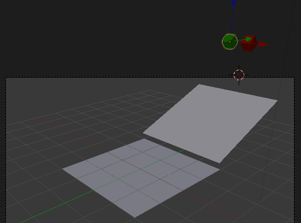O objetivo é criar um espaço para experimentar diferentes configurações de softbodies (os cubos) e sua colisão com os planos.
2- Selecione cada um dos planos e, no painel Physics, adicione propriedades de colisão (Collision) para estes poderem colidir com os cubos.
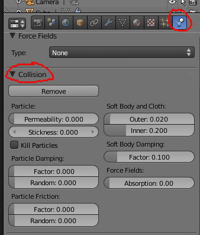Faça o mesmo para os softbodies. Apesar de não ser preciso para colidirem com os planos, é necessário caso os softbodies colidam entre si.
3- Selecione cada um dos cubos e, no painel Physics, adicione uma simulação Soft Body. Desative a caixa Soft Body Goal.
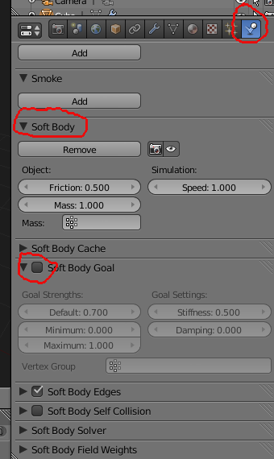Pode animar (ALT+A) para começar a ver o efeito de Soft Body.
4- A maior dificuldade da configuração de Soft Bodies reside na manipulação das várias propriedades relacionadas com o mundo da física (i.e. inércia, fricção, velocidade, massa, gravidade, etc.). Neste momento, os seus cubos devem parecer demasiado “moles”... Vamos resolver isso da forma mais simples, ativando a opção Stiff Quads existente no painel Soft Body Edges. Depois de ativar essa opção, o seu cubo já deverá parecer mais “rijo” (stiff).
5- Para melhorar o cálculo da simulação, pode subdividir os cubos, criando mais vértices. As principais configurações relativas à moleza/dureza dos softbodies estão disponíveis no painel Soft Body Edges. Experimente alterar alguns parâmetros num dos cubos e vá comparando os resultados.
Em modelação
1- Inicie uma nova cena. Adicione um plano e posicione o mesmo acima do cubo. Aumente ligeiramente o plano e rode-o cerca de 45º em torno do eixo Z. Este plano vai ser uma “toalha de mesa” e o cubo será a mesa.
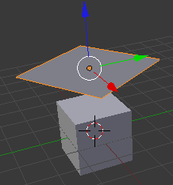2- Selecione o cubo e , no painel Physics, adicione propriedades de colisão (Collision) para este poder colidir com o plano/tolha.
3- Selecione o plano e, no painel Physics, adicione uma simulação Soft Body. Desative a caixa Soft Body Goal e ative a opção Stiff Quads existente no painel Soft Body Edges.
4- Se animar (ALT+A) irá ver o plano a atravessar o cubo porque o plano não tempo vértices suficientes para calcular a colisão. A imagem abaixo resulta após subdividir 5 vezes o plano e corresponde à frame 51. Como pode ver, existem alguns problemas mas o resultado já é interessante.
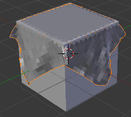5- Escolha uma frame onde a disposição da “toalha” seja interessante. Nós optámos pela frame 51. Existem várias formas de melhorar o resultado e eliminar as falhas visíveis na imagem acima. Em vez de alterar as configurações da simulação e voltar a calcular vá ao painel Modifiers e clique em Apply para tornar definitiva a forma da toalha.
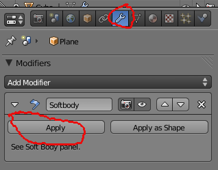6- Em baixo tem a mesma toalha, na mesma frame, mas com um modifier Subdivision Surface. O cubo foi ligeiramente redimensionado (em X e Y) mas mantida a sua altura.
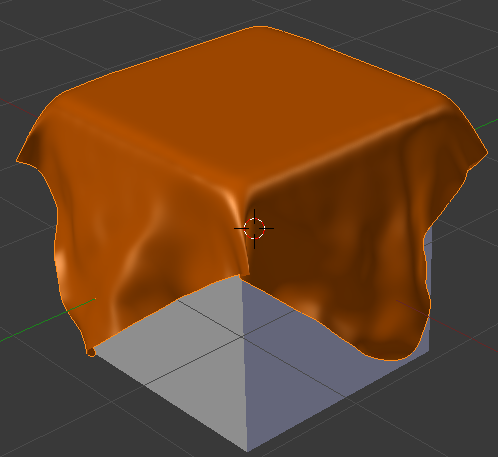Soft bodies parcial
1- Crie um objecto semelhante ao apresentado abaixo: uma esfera com Extrudes em forma de antenas. Foram utilizados 6 Extrudes para cada antena.
Aplique um Subdivision Surface (faça Apply ao modifier) e um Smooth ao objecto.
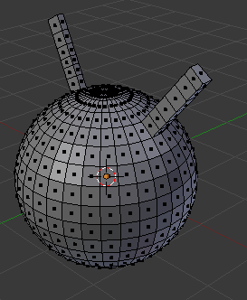 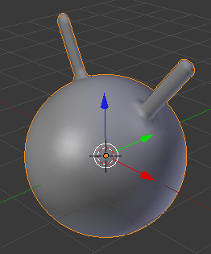2- Em Edit Mode, seleccione todos os vértices (no exemplo abaixo, optámos por seleccionar faces) que não fazem parte das “antenas” e a primeira linha de faces das “antenas”.
No painel Object Data, crie um novo grupo de vértices (clique no sinal +). Atribua um nome e clique em Assign para associar os vértices seleccionados ao grupo.

3- Crie uma animação com keyframes de Location para fazer a cabeça avançar e recuar.
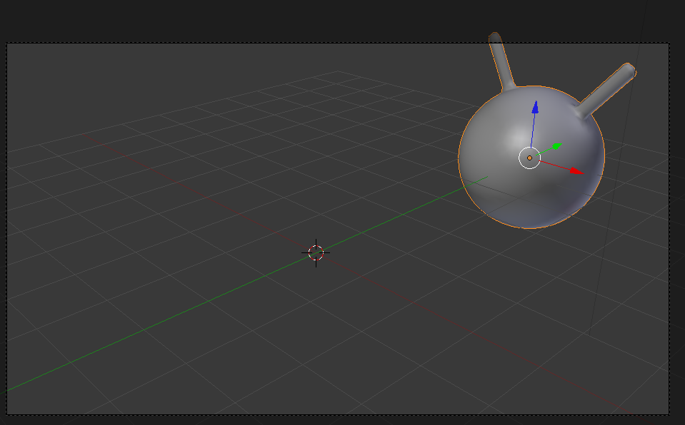 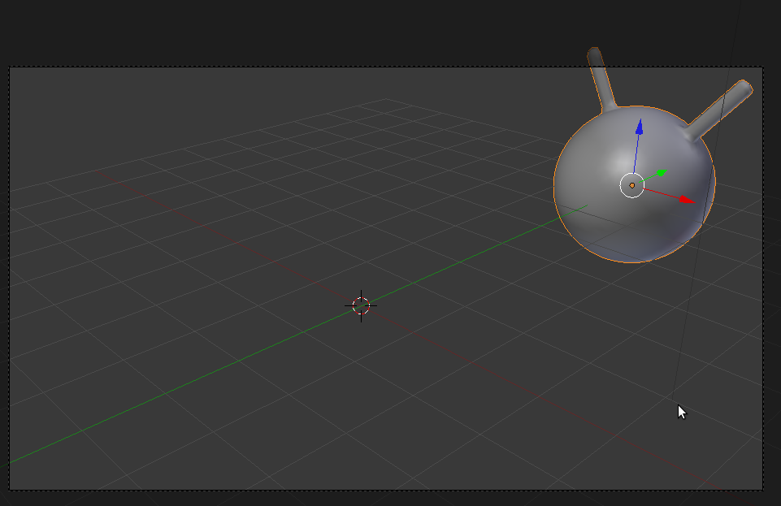
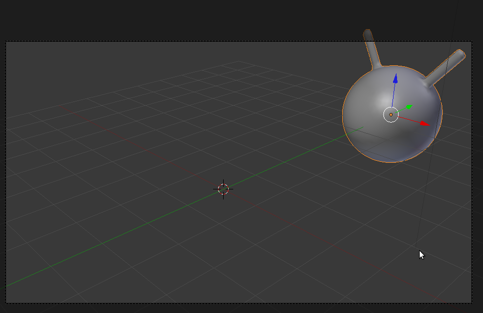
4- Crie uma simulação de Soft Body para o objecto mas associe o grupo de vértices que criou como pontos de controle.
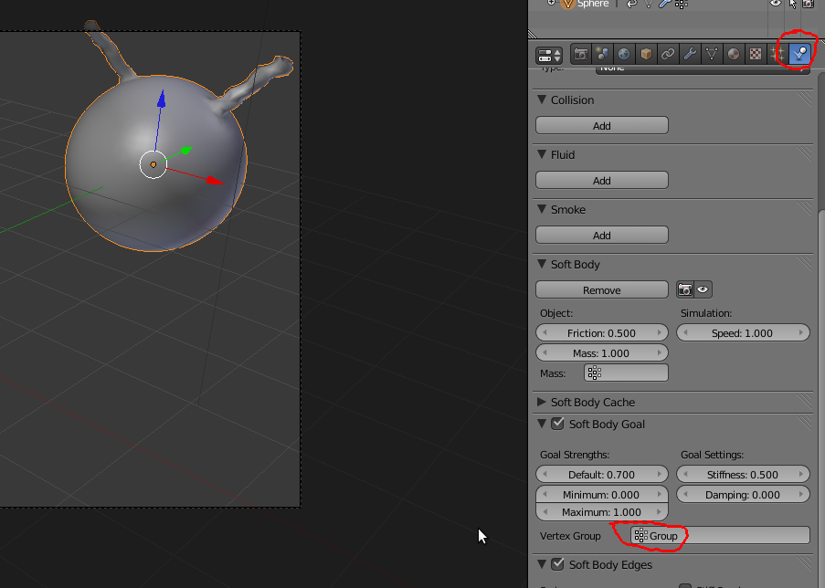5- Anime (ALT+A) para ver o resultado...
Deverá ter umas antenas muito elásticas e um corpo totalmente rígido.
O corpo está rígido porque quando criou o grupo de vértices atribuiu um Weight de 1.0 (não são afectados pela simulação). Se quiser que o corpo tenha alguma elasticidade, diminua o Weight no Vertex Group. Provavelmente, também será útil activar o Soft Body Self Collision.
Se quiser diminuir a elasticidade das antenas, reveja as configurações do Soft Body (consulte o tutorial de Soft Bodies) mas pode começar por activar o Stiff Quads.
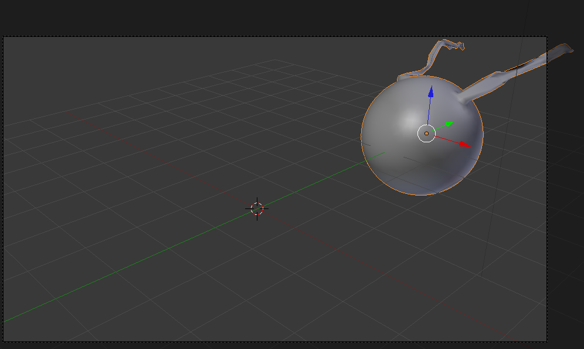Alguns parâmetros de configuração
Soft Body
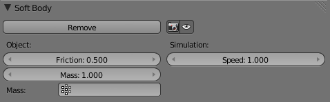Friction: fricção do objeto, maior fricção cria maior resistência ao movimento.
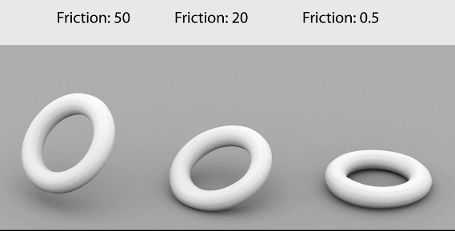Mass: massa do objeto, maior massa significa maior inércia.
Simulation Speed: velocidade de simulação do objeto, permite (des)acelerar simulação no objeto.
Soft Body Cache
Cache Step: Para uma simulação de maior qualidade e exatidão, antes de iniciar, é recomendável definir a Cache Step para 1. Define o número de frames da simulação que são cached (gravadas).
Algumas da imagens foram retiradas de "Blender SoftBody Tutorial - Introduction" de Daniel Kreuter, disponível em http://www.youtube.com/watch?v=ofIi4ddHGW0
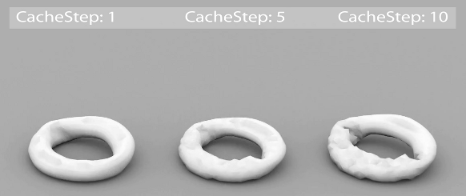Soft Body Goal
>Ativa forças que obrigam os vértices a permanecer ou regressar à sua posição original. Valor 1 significa que o objeto (ou grupo de vértices de um objeto...) não é afetado pela simulação e permanece na posição original, valor 0 significa que só é afetado pelas leis da física (pela simulação).
Se tiver um objeto no ar, com os valores pré-configurados, este vai permanecer no ar, “aos pulinhos”, não vai cair... Experimente reduzir o Default para 0.400 para ver o resultado.
Soft Body Edges
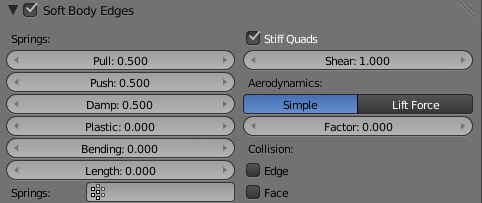É um dos mais importantes parâmetros de configuração. Define a resistência dos limites da forma ao movimento.
Pull: “esticar”, permite definir o grau de elasticidade das edges, valores mais baixos permitem material mais elástico. Latex é 0.5, cabedal é 0.999.
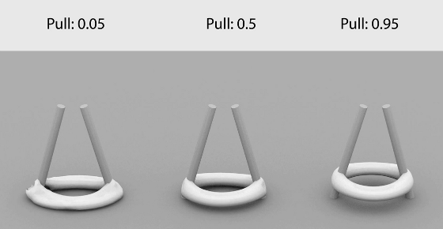Push: “encolher”, especifica a resistência do objeto, valores mais baixos para tecidos, valores mais altos para objetos rijos ou insuflados.
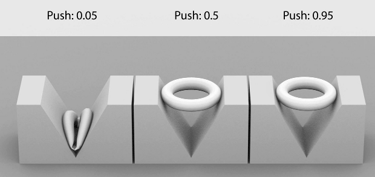Damp: fricção das edges
Plastic: grau de deformação permanente do objeto
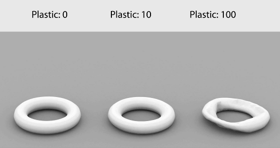Bending: grau de rigidez das dobras, aumenta resistência da forma do objeto.
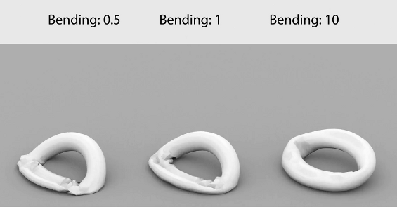Length: valor percentual para encolher/insuflar as edges. 0 desativa função, 100% significa sem alteração, o corpo mantém 100% do seu tamanho.
Stiff Quads: aumenta resistência da forma do objeto ao impedir que as Quads (faces com quatro lados) colapsem totalmente nas colisões.
Collision Edge/Face: aumenta precisão e tempo de cálculo ao também utilizar as arestas e faces para cálculo da colisão
Soft Body Self Collision
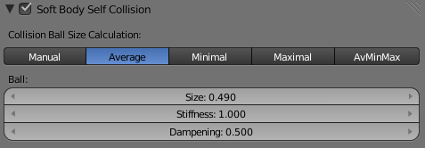Só funciona se tiver ativado o Soft Body Edges.
Ativa o cálculo de colisão com o próprio objeto. Imagine um pano a cair, no ar, que colide com si mesmo, por oposição a um pano que se atravessa a si mesmo.
Soft Body Solver
Painel com várias opções para melhorar a correção/exatidão da simulação.
Neste painel, uma das opções mais importantes é o Error Limit (margem global de erro da simulação). Valores mais elevados necessitam de menos tempo de cálculo, valores mais baixos (menor margem de erro) dão maior precisão e exatidão.